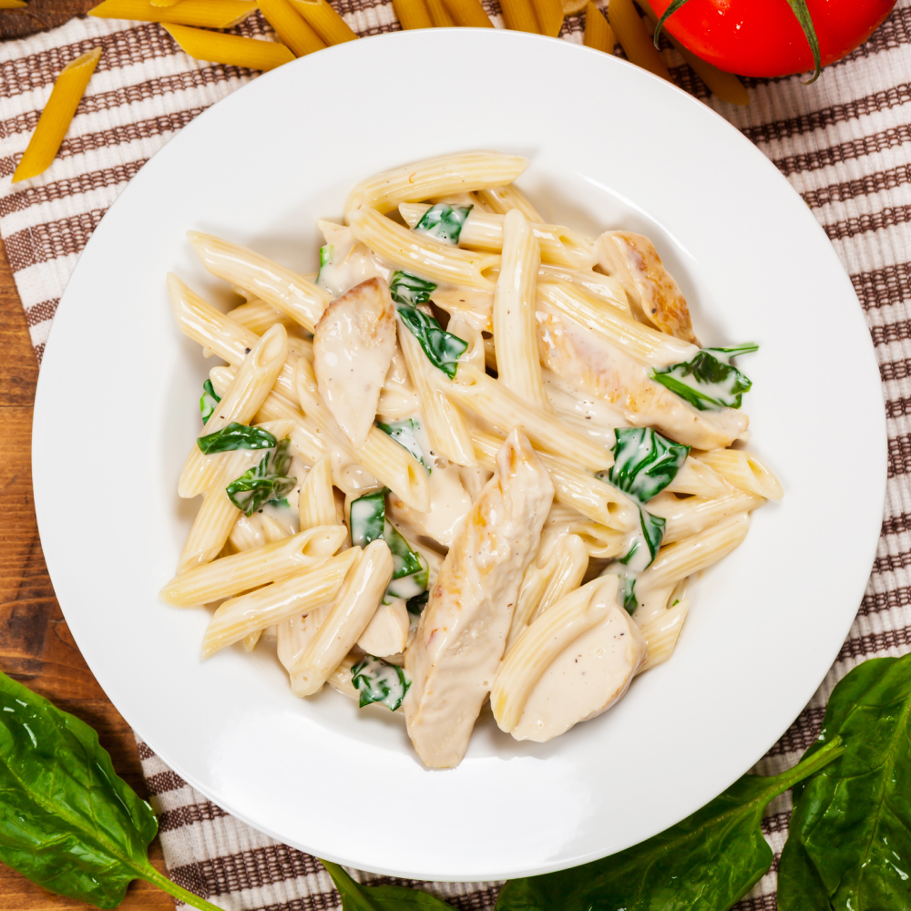

The history of Fettuccine Alfredo began in 1908 in Rome, Italy. While pasta has existed for centuries, this specific preparation was created by Alfredo di Lelio to entice his wife to eat after the birth of their first son.
A precursor to this dish was the simple al burro pasta, but Alfredo doubled the amount of butter before adding it to the bowl. Modern interpretations often include heavy cream, though the original Roman version relies solely on the emulsion of cheese and butter.
The name Alfredo is now synonymous with rich, creamy sauces in North America and throughout Europe. Furthermore, the Encyclopedia of Italian Cooking explains the technique as mantecatura, the process of creating a creamy consistency through vigorous tossing of pasta with fat and cheese.
Using a large pot, boil the water with the salt until it reaches a rolling boil. Add the fettuccine and cook until it is al dente, usually about 8 to 10 minutes depending on whether the pasta is fresh or dried.
Add the butter and the optional garlic to a wide skillet and melt over low heat. If using cream, pour it in now and let it simmer for about five minutes until the sauce begins to thicken slightly.
Put the cooked pasta directly into the skillet, keeping some of the starchy water. It is essential to keep this water as it helps the cheese bind to the noodles and creates the signature velvety texture.
When you're ready to serve, turn the heat to the lowest setting and add the grated Parmigiano-Reggiano in small batches. Toss the pasta constantly with tongs or a large fork to ensure the cheese melts evenly and does not clump.
Using your tongs, swirl the pasta into nests on warmed plates to maintain the temperature. This time I went for a classic finish: place a generous crack of black pepper over the center of the pasta and sprinkle with finely chopped parsley except for the edges of the plate. Sprinkle with a lot of extra cheese and then some more pepper on top. Serve immediately while the sauce is creamy and the pasta is hot. Enjoy your meal.